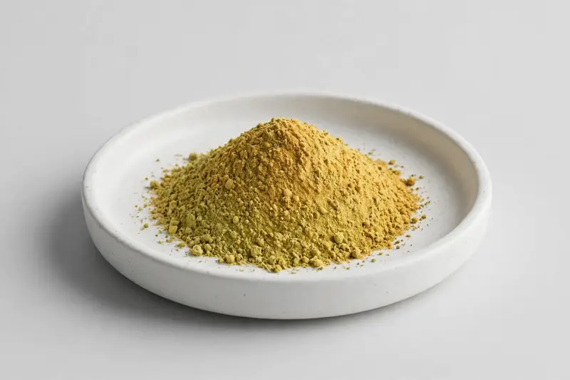

California poppy — aerial-part extract for relaxation and sleep-support formulations.

Overview
California poppy extract is a botanical powder produced from the aerial parts of Eschscholzia californica, requested by formulators working on relaxation and sleep-support supplement concepts. Buyers typically specify an extract ratio or a flavonoid-oriented standardisation, and the ingredient is often used alongside other botanicals in evening formulations. As a Xi'an-based trading company sourcing through vetted partner producers, we take a neutral, compliance-aware approach and describe applications strictly as formulation positioning rather than any physiological effect.
Specifications below reflect commonly requested options in the market — not a stock list. Share your target spec and we'll confirm exactly what we can supply, honestly.
| Specification | Details |
|---|---|
| Botanical identity | California poppy aerial-part extract powder (Eschscholzia californica) |
| Source material | Aerial parts |
| Marker compound | Commonly requested spec grades: extract ratios such as 4:1 to 10:1, and flavonoid-oriented standardised grades agreed with the buyer. |
| Appearance | Yellow-green to golden fine powder |
| Mesh size | Typically 80–100 mesh (confirm per inquiry) |
| Testing | COA/TDS arranged on request; scope agreed per your spec |
Applications
Documentation
We don't claim in-house labs or certifications we don't hold. COA and TDS documents can be arranged on request, and testing scope is agreed against your specification before supply.
FAQ
Related products
Morus alba
Key marker: DNJ 1%
View specs →Citrus aurantium
Key marker: Synephrine 6-10%
View specs →Sodium hyaluronate (fermentation-derived)
Key marker: Cosmetic & food grades
View specs →Monascus purpureus
Key marker: Monacolin K 0.4-3%
View specs →Sambucus nigra
Key marker: Total Flavonoids
View specs →Buyer guides
Buyer’s guide
Identity, actives, heavy metals, micro — what each section of a Certificate of Analysis means, and the red flags that tell you to walk away.
Read the guide →Buyer’s guide
Section-by-section COA walkthrough — marker assays, heavy metals, micro panels, red flags, and a buyer checklist.
Read the guide →Send your target spec and volumes — we'll respond with a tailored quotation.
Request a Quote